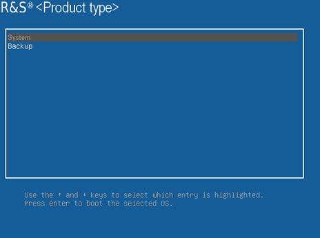
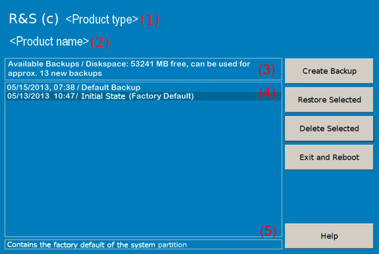

Backup and Restore Application
Using the backup and restore application, you can back up the instrument installations and their configuration so that they can be restored if necessary. When restoring, you can choose between various states.
- Factory default state
If, for example, the system crashes, you can restore the factory default state. - Intermediate states that you have saved
For example, you can back up the current system partition before a firmware update or provide different system configurations for different environments.
In the restore process, the system partition is deleted, formatted and written newly. The data partition is not affected.
Connect an external keyboard. If the instrument does not have a monitor, connect also an external monitor. |
To display the main dialog for backup and restore
Restart the R&S CMW.
The boot screen is displayed. By default, "System" is selected. If you do not perform the next step within 4 seconds, the dialog vanishes and the booting process continues.
Select the "Backup" partition and press ENTER.

The main dialog is displayed. It provides access to all functions of the backup and restore application.

Main dialog (example)(1) = Header showing instrument type(2) = Header showing instrument name(3) = Free memory space on backup partition(4) = List of backups already created(5) = Description of currently selected backup
To continue, see one of the following chapters: